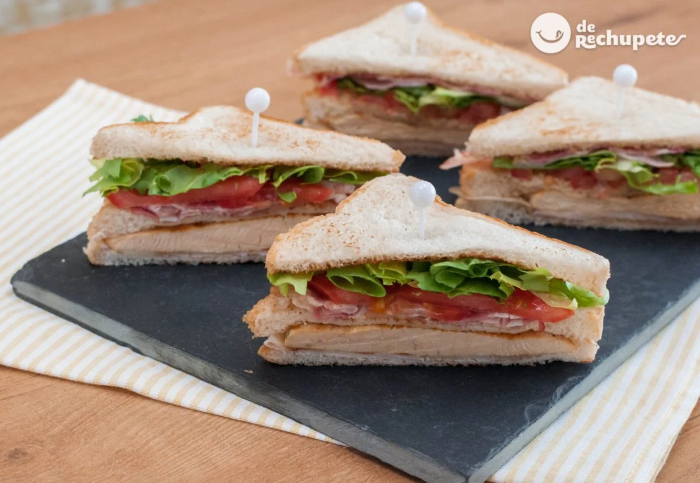

Sanwinch
Ingredients
- 12 slices sliced bread
- 4 slices of your favorite cheese for sandwiches
- 4 chicken fillets
- 8 slices of pancetta or bacon
- Fresh lettuce
- 4 slices of cooked ham
- 16 thin slices of tomato
- Mayonnaise sauce (to taste)
- Salt and freshly ground black pepper (to taste)
- Butter
Preparation
- The first step will be to wash the vegetables, separating the lettuce leaves
and cutting some thin slices of natural tomato.In this way we will
have them prepared for the assembly of the sandwich.
- We heat a frying pan without any type of fat and add the bacon.
We cook the bacon until it is slightly crispy. We reserve.
- We heat a frying pan with a drizzle of oil to cook the chicken fillets.
Season and reserve. We spread three slices of bread with
butter and brown them in the pan on both sides.